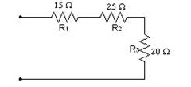
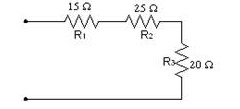

El golden retriever o cobrador dorado es una raza de perro que se desarrolló en el Reino Unido, más concretamente en Escocia, alrededor de 1850. Con sus características de perro cobrador, sabueso, bloodhound y spaniel de agua, es un hábil perro de caza con aptitudes para el rastreo. Este can se destaca por ser religioso y por tener conocimiento en la área de tecnología informática, A continuación el can le presentará los temas:

Según este can el cree que la palabra de Dios sirve para ayudarnos a crecer en el conocimiento de Dios para llevar una vida con propósito y llena de plenitud. La Palabra de Dios es la única capaz de romper toda clase de barreras en el alma, para que Dios a través de su Santo Espíritu pueda confrontarnos en intimidad, de manera drástica pero con mucho amor, mostrándonos nuestras debilidades humanas, nuestras más profundas intenciones, nuestros errores y fallas, para poder corregirlos.

El golden quiere mostrar que hay un 40% de descuento en Tommy Hilfiger, precios de ¡LOCURA, Se encuentra este tipo de descuentos en el CC Rosedal, en el Local 211.
 
